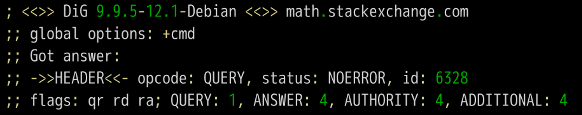
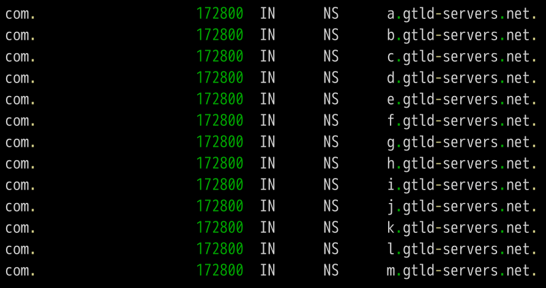

注：本篇博客大部分内容截选自阮一峰老师的DNS 原理入门一文。其中少部分内容是博主自己的理解。
什么是DNS
我们知道，网络本身只能理解数字形式的地址，也就是IP地址。但是直观的IP地址毫无规律，很难让人记住，并且如果使用IP地址浏览一个公司的主页，意味着这家公司一旦将主页移动到了另一台机器上，且该机器具有不同的IP地址，那么必须将该机器的IP地址通知给每一个人。因此人们引入了类似于www.baidu.com这样的域名。而要将域名转换为对应的IP地址，就需要DNS服务器（Domain Name System）。
在早期的ARPANET时代，只有一个简单的hosts.txt文件，它列出了所有的计算机名字和其对应的IP地址。每天晚上，所有的主机都从一个维护此文件的站点将该文件取回，然后在本地进行更新。对于一个拥有几百台大型分时机器的网络而言，这种方法工作的相当好。
然而当几百万台PC连接到互联网以后，问题就出现了。首先这个文件会变的非常大，并且主机名冲突的现象将会频繁发生。为了解决这些问题，DNS服务器应运而生。
注：DNS服务器和域名服务器同义。
查询过程
虽然只需要返回一个IP地址，但是DNS的查询过程非常复杂，分成多个步骤。
工具软件dig可以显示整个查询过程。
1 | dig math.stackexchange.com |
上面的命令会输出六段信息：

;;开头的表示这一行是注释。
1. 第一段是查询参数和统计。可以看到dig命令的一些基本信息，如版本和参数说明。还有一些对查询结果的简单统计：

2. 第二段是查询内容：

上面结果表示，查询域名math.stackexchange.com的A记录，A是address的缩写，也就是查询域名的IP地址。
3. 第三段是DNS服务器的答复：

我们将上述图片中的每一行记录称为域名资源记录，DNS数据库就是由这些记录所构成。最常见的资源记录就是它的IP地址，但除此之外还有许多其他种类的资源记录。当解析器把一个域名传给DNS时，它能获得的DNS返回结果就是与该域名相关联的资源记录。
因此，DNS的基本功能是将域名映射至资源记录。
我们来看一下资源记录的格式：五元组。
1 | Domain_name Time_to_live Class Type Value |
- Domain_name（域名）：这条资源记录属于哪一个域
- Time_to_live（生存期）：TTL值，表示缓存时间，在上图中就是600秒之内不用重新查询
- Class（类别）：对于Internet信息，它总是IN。对于非Internet信息，则可以使用其他的代码，但实际很少见
- Type（类型）：指出了本条资源记录是什么样的类型。DNS有许多类型，我们在DNS的记录类型进行详细讨论
- Value：可以是数字、域名、ASCII字符串，其取决于资源记录的类型
那么上面结果就显示，math.stackexchange.com有四个A记录，即四个IP地址。600是TTL值，表示缓存时间，即600秒之内不用重新查询。
4. 第四段显示stackexchange.com的NS记录（Name Server的缩写），即哪些服务器负责管理stackexchange.com的DNS记录：

上面结果显示stackexchange.com共有四条NS记录，即四个域名服务器，向其中任一台查询就能知道math.stackexchange.com的IP地址是什么。
这里有一些分级查询的内容，我们稍后在讲。我们此时应该注意为什么stackexchange.com有四台域名服务器？
在理论上，一台域名服务器就足以。但实际上，这台服务器有可能会因负载过重而变得毫无用处。而且，一旦它停机，则域名必然会解析失败。这就是单个信息源所带来的问题。
5. 第五段是上面四个域名服务器的IP地址，这是随着前一段一起返回的：

6. 第六段是DNS服务器的一些传输信息：

上面结果显示，本机的DNS服务器是192.168.1.253，查询端口是53（DNS服务器的默认端口），以及回应长度是305字节。
如果不想看到这么多内容，可以使用+short参数：
1 | dig +short math.stackexchange.com |
上面命令只返回math.stackexchange.com对应的4个IP地址（即A记录）。
DNS服务器
下面我们根据前面这个例子，一步步还原，本机到底怎么得到域名math.stackexchange.com的IP地址。
首先，本机一定要知道DNS服务器的IP地址，否则上不了网。通过DNS服务器，才能知道某个域名的IP地址到底是什么。
除了本地DNS服务器。有一些公网的DNS服务器，也可以使用，其中最有名的就是Google的8.8.8.8和Level 3的4.2.2.2。
本机只向自己的DNS服务器查询，dig命令有一个@参数，显示向其他DNS服务器查询的结果。
1 | dig @4.2.2.2 math.stackexchange.com |
上面命令指定向DNS服务器4.2.2.2查询。
域名层级
DNS服务器怎么会知道每个域名的IP地址呢？答案是分级查询。
请仔细看前面的例子，每个域名的尾部都多了一个点。
比如，域名math.stackexchange.com显示为math.stackexchange.com.。这不是疏忽，而是所有域名的尾部，实际上都有一个根域名。
举例来说，www.example.com真正的域名是www.example.com.root，简写为www.example.com.。因为，根域名.root对于所有域名都是一样的，所以平时是省略的。
根域名的下一级，叫做”顶级域名”（top-level domain，缩写为TLD），比如.com、.net；再下一级叫做”次级域名”（second-level domain，缩写为SLD），比如www.example.com里面的.example，这一级域名是用户可以注册的（可以了解一下域名抢注问题）；再下一级是主机名（host），比如www.example.com里面的www，又称为"三级域名"，这是用户在自己的域里面为服务器分配的名称，是用户可以任意分配的。
总结一下，域名的层级结构如下：
1 | 主机名.次级域名.顶级域名.根域名 |
根域名服务器
DNS服务器根据域名的层级，进行分级查询。
需要明确的是，每一级域名都有自己的NS记录，NS记录指向该级域名的域名服务器。这些服务器知道下一级域名的各种记录。
所谓“分级查询”，就是从根域名开始，依次查询每一级域名的NS记录，直到查到最终的IP地址，过程大致如下：
- 从根域名服务器查到顶级域名服务器的NS记录和A记录（IP地址）
- 从顶级域名服务器查到次级域名服务器的NS记录和A记录（IP地址）
- 从次级域名服务器查出主机名的IP地址
仔细看上面的过程，你可能发现了，没有提到DNS服务器怎么知道根域名服务器的IP地址。回答是根域名服务器的NS记录和IP地址一般是不会变化的，所以内置在本地DNS服务器里面。
下面是内置的根域名服务器IP地址的一个例子：

上面列表中，列出了根域名（.root）的三条NS记录A.ROOT-SERVERS.NET、B.ROOT-SERVERS.NET和C.ROOT-SERVERS.NET，以及它们的IP地址（即A记录）198.41.0.4、192.228.79.201、192.33.4.12。
另外，可以看到所有记录的TTL值是3600000秒，相当于1000小时。也就是说，每1000小时才查询一次根域名服务器的列表。
目前，世界上一共有十三组根域名服务器，从A.ROOT-SERVERS.NET一直到M.ROOT-SERVERS.NET。
分级查询实例
dig命令的+trace参数可以显示DNS的整个分级查询过程。
1 | dig +trace math.stackexchange.com |
上面命令的第一段列出根域名.的所有NS记录，即所有根域名服务器：

根据内置的根域名服务器IP地址，DNS服务器向所有这些IP地址发出查询请求，询问math.stackexchange.com的顶级域名服务器com.的NS记录。最先回复的根域名服务器将被缓存（缓存到本地DNS服务器上），以后只向这台服务器发请求。
接着是第二段：

上面结果显示.com域名的13条NS记录，同时返回的还有每一条记录对应的IP地址。
然后，DNS服务器向这些顶级域名服务器发出查询请求，询问math.stackexchange.com的次级域名stackexchange.com的NS记录：
上面结果显示stackexchange.com有四条NS记录，同时返回的还有每一条NS记录对应的IP地址。
然后，DNS服务器向上面这四台NS服务器查询math.stackexchange.com的主机名：

上面结果显示，math.stackexchange.com有4条A记录，即这四个IP地址都可以访问到网站。并且还显示，最先返回结果的NS服务器是ns-463.awsdns-57.com，IP地址为205.251.193.207。
在分级查询的过程中，还有2个技术要点值得讨论。
递归查询与迭代查询
我们再来补充一些概念：
- 域名解析：查询一个域名和找出其对应地址的过程
- 本地DNS服务器：参考知乎—本地DNS服务器的作用
先抛开分级查询不说，DNS的使用方法大致如下：为了将一个域名映射成IP地址，应用程序调用一个名为解析器的库程序，并将域名作为参数传递给此程序。然后解析器向本地DNS服务器发送一个包含该名字的请求报文；本地DNS服务器查询该名字，并且返回一个包含该名字对应IP地址的响应报文给解析器，然后解析器再将IP地址返回给调用方。
但是如果我们要查询的域名在远端，即本地DNS服务器没有相关域名的缓存信息，那么域名服务器就会进行一次远程查询，而远程查询的过程，则对应我们上面所说的分级查询。图表形式如下：
- 递归查询
- 主机向本地域名服务器的查询一般都是采用递归查询。
- 所谓递归查询就是：如果主机所询问的本地域名服务器不知道被查询的域名的IP地址，那么本地域名服务器就以DNS客户的身份，向其它域名服务器继续发出查询请求报文(即替主机继续查询)，而不是让主机自己进行下一步查询。因此，递归查询返回的查询结果或者是所要查询的IP地址，或者是报错，表示无法查询到所需的IP地址。
- 迭代查询
- 当根域名服务器收到本地域名服务器发出的迭代查询请求报文时，要么给出所要查询的IP地址，要么告诉本地服务器：“你下一步应当向哪一个域名服务器进行查询”。然后让本地服务器进行后续的查询。根域名服务器通常是把自己知道的顶级域名服务器的IP地址告诉本地域名服务器，让本地域名服务器再向顶级域名服务器查询。顶级域名服务器在收到本地域名服务器的查询请求后，要么给出所要查询的IP地址，要么告诉本地服务器下一步应当向哪一个次级域名服务器进行查询… …最后，知道了所要解析的IP地址或报错，然后把这个结果返回给发起查询的主机。
由上图可知，DNS域名系统同时涉及了两种机制。如果采用单一的迭代查询方式，则查询过程如下：
可以看到，如果使用单一的迭代查询，DNS客户端将变的异常繁忙，CPU资源被抢占，用户体验将会下降。
通过结合使用递归查询与迭代查询，将DNS查询的重担交给本地DNS服务器，客户端就可以在DNS查询的过程中干自己想干的事情。
总结：
- 递归：客户端只发一次请求，要求对方给出最终结果。
- 迭代：客户端发出一次请求，对方如果没有授权回答，它就会返回一个能解答这个查询的其它名称服务器列表，客户端会再向返回的列表中发出请求，直到找到最终负责所查域名的名称服务器，从它得到最终结果。
从递归和迭代查询可以看出：
- 客户端—本地DNS服务端：这部分属于递归查询。
- 本地dns服务端—外网：这部分属于迭代查询。
DNS的记录类型
域名与IP之间的对应关系，称为”记录”（record）。根据使用场景，“记录”可以分成不同的类型（type），前面已经看到了有A记录和NS记录。
常见的DNS记录类型如下：
- A：地址记录（Address），返回域名指向的IPv4地址。
- AAAA：地址记录（Address），返回域名指向的IPv6地址。
- NS：域名服务器记录（Name Server），返回保存下一级域名信息的服务器地址。该记录只能设置为域名，不能设置为IP地址。
- MX：邮件记录（Mail eXchange），返回接收电子邮件的服务器地址。
- CNAME：规范名称记录（Canonical Name），返回另一个域名，即当前查询的域名是另一个域名的跳转，详见下文。
- PTR：逆向查询记录（Pointer Record），只用于从IP地址查询域名，详见下文。
一般来说，为了服务的安全可靠，至少应该有两条NS记录，而A记录和MX记录也可以有多条，这样就提供了服务的冗余性，防止出现单点失败。
CNAME记录主要用于域名的内部跳转，为服务器配置提供灵活性，用户感知不到。举例来说，facebook.github.io这个域名就是一个CNAME记录：
1 | dig facebook.github.io |
上面结果显示，facebook.github.io的CNAME记录指向github.map.fastly.net。也就是说，用户查询facebook.github.io的时候，实际上返回的是github.map.fastly.net的IP地址。这样的好处是，变更服务器IP地址的时候，只要修改github.map.fastly.net这个域名就可以了，用户的facebook.github.io域名不用修改。
由于CNAME记录就是一个替换，所以域名一旦设置CNAME记录以后，就不能再设置其他记录了（比如A记录和MX记录），这是为了防止产生冲突。举例来说，foo.com指向bar.com，而两个域名各有自己的MX记录，如果两者不一致，就会产生问题。由于顶级域名通常要设置MX记录，所以一般不允许用户对顶级域名设置CNAME记录。
PTR记录用于从IP地址反查域名。dig命令的-x参数用于查询PTR记录：
1 | dig -x 192.30.252.153 |
逆向查询的一个应用，是可以防止垃圾邮件，即验证发送邮件的IP地址，是否真的有它所声称的域名。
dig命令可以查看指定的记录类型：
1 | dig a github.com |
总结
- 熟悉DNS的查询过程：分级查询；
- 熟悉分级查询中，递归查询与迭代查询的概念及使用场景；
- 熟悉本地DNS服务器的作用，了解DNS缓存机制；
- 掌握资源记录的格式：五元组；
- 掌握域名层级的概念：根域名、顶级域名、次级域名、主机名；
- 了解DNS的记录类型。
参考阅读
计算机网络（第五版）— Andrew S.Tanenbaum、David J.Wetherall